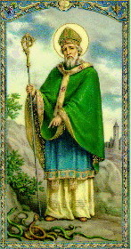
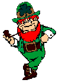

St. Patrick's Day is Ireland's greatest national holiday as well as a holy day. The date marks the anniversary of the death of the missionary who became the patron saint of Ireland. It is a happy holiday for the Irish wherever they may be - in Dublin, New York City, Boston, or San Francisco. The day celebrated with parades, speeches, festive dinners, and dances. Green is the color of the day, with thousands of little cloth shamrocks worn even by those whose forefathers never touched the shores of Ireland.
It is known that St. Patrick was born in Britain to wealthy parents near the end of the fourth century. At the age of sixteen, Patrick was taken prisoner by a group of Irish raiders who were attacking his family's estate. They transported him to Ireland where he spent six years in captivity. During this time, he worked as a shepherd, outdoors and away from people. Lonely and afraid, he turned to his religion for solace, becoming a devout Christian.
The first St. Patrick's Day parade took place not in Ireland, but in the United States. Irish soldiers serving in the English military marched through New York City on March 17, 1762. Along with their music, the parade helped the soldiers to reconnect with their Irish roots, as well as fellow Irishmen serving in the English army. Suddenly, annual St. Patrick's Day parades became a show of strength for Irish Americans, as well as a must-attend event for a slew of political candidates. In 1948, President Truman attended New York City 's St. Patrick's Day parade, a proud moment for the many Irish whose ancestors had to fight stereotypes and racial prejudice to find acceptance in America.
Leprechauns are little make-believe fairies from Ireland. They are the little old men who are shoemakers for the fairies. They usually stand about 2 feet tall. Treasure hunters can often track down a leprechaun by the sound of his shoemaker's hammer. The legend is that if you catch one you can force him to tell you where he hides his gold.
The Leprechaun
The Jig's Up
The wearing of the green Kissing the blarney stone
Blarney stone The Blarney Stone is a stone set in the wall of the Blarney Castle tower in the Irish village of Blarney. Kissing the stone is supposed to bring the kisser the gift of persuasive eloquence. The legend says that an old woman cast a spell on the stone to reward a king who had saved her from drowning. Kissing the stone while under the spell gave the king the ability to speak sweetly and convincingly. It's difficult reach the stone. Kissers have to lie on their back and bend backward or downward, holding iron bars for support.
School children have started a little tradition of their own. They pinch classmates who don't wear green on this holiday. Wearing green is strictly a U.S. custom, as the color green is not popular in Ireland. Green is connected to the old green flag and a time when Ireland was not free. Green is also a color connected with hope and nature. 
between you and harm. May and her Son St. Patrick with his staff. Martin with his mantle. Bridget with her vail. Michael with his shield. And God over all with His strong right hand.
Hath overlooked thee. There are three greater in heaven Who will cast all evil from thee Into the great and terrible sea. Pray to them, and to the seven angels of God, And they will watch over thee. Four angels at her head Mark, Matthew, Luke and John; God bless the bed that she lies on. New moom, new moom, God bless me God bless this house and family.
Here's to absent friends and here's twice to absent enemies. Here's to the light heart and the heavy hand. Thirst is a shameless disease so here's to a shameful cure. Here's to a wet night and a dry morning. May we always have a clean shirt, a clean conscience, and a bob in the pocket. May you be across Heaven's threshold before the old boy knows you're dead. Moon, moon tell unto me,
It is unlucky to offer your right hand in salutation, for thee is an old say, "A curse with the left hand to those we hate, but the right hand to those we honor."
If the palm of your hand itches you will be getting money; if the elbow, you will be changing beds.
Breaking a mirror brought seven years of bad luck, while two people washing hands in the same basin at the same time courted disaster.
A man that can't laugh at himself should be given a mirror. A man takes a drink; the drink takes a drink; the drink takes the man. A narrow neck keeps the bottle from being emptied in one swig. Morning is the time to pity the sober. The way they're feeling then is the best they're going to feel all day. You can lead the horse to the well, but you can't make him drink. Better the coldness of a friend than the sweetness of an enemy. Be nice to them on the way up. You might meet them all on the way down. If a man fools me once, shame on him. If he fools me twice, shame on me. Let your anger set the sun and not rise again with it. What do you call an Irishman who knows how to control his wife? ***
Definition of an Irish husband: *** Courtship is a time during which the girl decides whether she can do better or not. ***
Dinny was standing in the street the other day when an English chap came up to him and said, ***
An Irishman who had a little to much to drink is driving home from the city one night and, of course, his car is weaving violently all over the road. A cop pulls him over.
Many people will be eating Irish food such as Irish Stew and Corned Beef and cabbage on St. Patrick's Day. Corned Beef is not an Irish dish. It is what Americans think the Irish eat. A more traditional meal would be ham and cabbage or bacon and cabbage. Some say that in Ireland on St. Patrick's Day the traditional green beer is prominent. However, in Ireland, many years ago, St. Patrick's Day is considered a holy day and Pubs were not open for business. There were no parades, no drinking or wearing green. Green was considered an unlucky color.
The sweetest flower that grows. You may search everywhere, But none can compare with my wild Irish Rose.
My Wild Irish Rose,
|